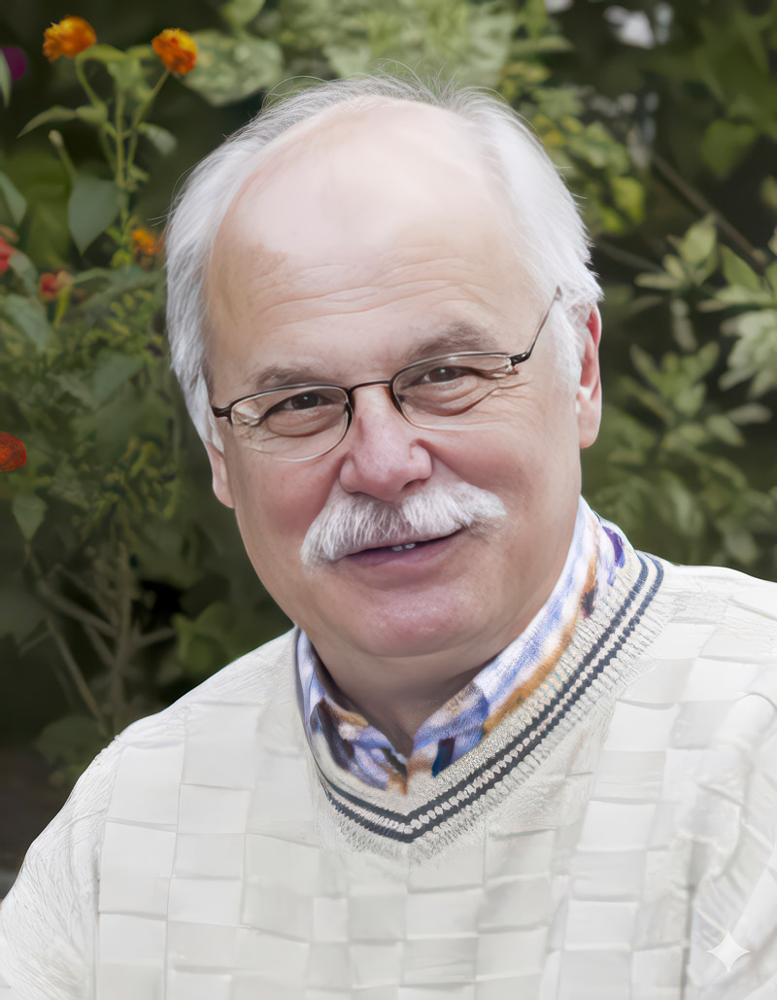

Warum diese Seite existiert

Mein Name ist Wolfgang Pilz. Seit Jahren erforsche ich die Geschichte meiner Familie mit klassischen genealogischen Methoden — Kirchenbücher, Matriken, Archive.
2019 habe ich zusätzlich einen autosomalen DNA-Test gemacht und die Ergebnisse auf GEDmatch hochgeladen, um sie mit einer breiteren Datenbank abzugleichen. Die DNA bestätigte vieles, was die Papierquellen schon zeigten — und sie zeigte etwas, das in den Kirchenbüchern fast unsichtbar geworden war: einen Anteil aschkenasisch-jüdischer Herkunft.
Dieser Anteil hat einen Namen in meinem Stammbaum: Theresia (Kekulé-Nr. 69), verheiratete Bechinie. In den Urkunden tritt sie unter mehreren Namen auf. Im Taufeintrag von 1768 in Amschelberg wird sie zunächst als Apollonia Jablotzkin geführt — der Name stammt von ihrem ersten Ehemann Abraham Jablonsky — und erhält bei der Taufe den Namen Theresia mit dem Beinamen Kosso-Horska. Der früheste primärquellenbelegte Familienname, der auf ihre eigene Herkunftsfamilie verweist, erscheint ein Jahr später: im Trauungsregister vom 22. Oktober 1769 ist sie als „Rudolphiana aus Kosova Hora" eingetragen. Ihr Ledigenname „Kopidlansky" taucht erst spät auf — 1803 nennt der Heiratseintrag ihres Sohnes Josef sie ausdrücklich „Theresia gebor. Kopidlansky von Kosso Hora, vulgo Amselberg". Im Konsistorialakt des Erzbischöflichen Amtes von 1768 erscheint sie zusätzlich als Peol, Tochter eines Moshe — der einzige primärquellenbelegte Hinweis auf ihre jüdische Herkunftsfamilie. Davon zu unterscheiden ist die Bezeichnung „Pessel aus Miskowitz", die mir der jüdische Genealoge Julius Müller per E-Mail ohne Quellenangabe genannt hat; ob „Peol" und „Pessel" dieselbe Person bezeichnen, ist plausibel, aber nicht belegt. Die erhaltenen Kirchenbucheinträge belegen, dass sie jüdischer Herkunft war, 1768 in Amschelberg (Kosova Hora) zum Christentum konvertierte und 1769 den Jäger Philipp Bechinie heiratete.
Genau hier setzt die DNA an. Unter meinen Matches fand sich ein besonders starker Treffer: die Familie Zeisl aus Wien — eine jüdische Familie mit Wurzeln im selben böhmischen Raum. Die folgenden Kapitel dokumentieren die systematische Auswertung dieses Fundes — vom DNA-Befund über die Stammbäume bis zu den offenen Fragen.
1. Ausgangslage — Der Zeisl-Match
Auf GEDmatch teile ich mit Walter Steven Z. 43 gemeinsame Matches. Ein einzelnes Segment von 29,1 cM auf Chromosom 9 bestätigt eine reale genealogische Verbindung — kein Endogamie-Rauschen.
2. Theresia — Die Konvertitin aus Amschelberg
Namen und Kontexte
Die Namen erscheinen in den Quellen in dieser Reihenfolge:
| Quelle / Anlass | Jahr | Name |
|---|---|---|
| Konsistorialakt des Erzbischöflichen Amtes — primärquellenbelegter Hinweis auf die jüdische Herkunftsfamilie | 1768 | Peol, Tochter eines Moshe |
| Taufeintrag — Name aus 1. Ehe (Abraham Jablonsky) | 1768 | Apollonia Jablotzkin |
| Taufeintrag — Taufname mit Beiname nach Herkunftsort | 1768 | Theresia, Beiname Kosso-Horska |
| Trauungseintrag mit Philipp Bechinie — frühester Familienname mit Bezug zur Herkunftsfamilie | 1769 | Rudolphiana aus Kosova Hora |
| Heiratseintrag des Sohnes Josef — erstmals expliziter Ledigenname | 1803 | „Theresia gebor. Kopidlansky von Kosso Hora, vulgo Amselberg" |
| (zur Einordnung) Auskunft des jüdischen Genealogen Julius Müller per E-Mail, ohne Quellenangabe | — | Pessel aus Miskowitz |
Lebenslauf
- Namen in den Urkunden: 1768 bei der Taufe noch als Apollonia Jablotzkin (Name aus 1. Ehe), getauft auf den Namen Theresia (Beiname Kosso-Horska) — 1769 im Trauungseintrag erstmals als „Rudolphiana aus Kosova Hora" (frühester Familienname mit Bezug zur Herkunftsfamilie) — „Kopidlansky" erst 1803 im Heiratseintrag des Sohnes Josef als ausdrücklicher Ledigenname.
- Vater: Mosche (ohne Familienname bekannt)
- 1. Ehemann: Abraham Jablonsky — Scheidung Oktober 1768
- 2. Ehemann: Philipp Bechinie (Jäger) — Heirat 22.10.1769 in Chlum
- Kinder mit Philipp: Franz Adam (1770/71), Anna (1773–1775), Josef (1776); Mariana Maria — Zuordnung unsicher, nicht urkundlich belegt
Die DNA-Verbindung zu Zeisl läuft vermutlich nicht über Theresia selbst (die 1768 konvertierte und damit aus dem jüdischen Heiratsnetzwerk ausschied), sondern über Geschwister, Nichten oder Neffen von Theresia, die jüdisch blieben und im böhmischen Heiratsnetzwerk weiter aktiv waren.
3. Stammbaum Zeisl — 6 Generationen
Walter Steven Z.s Vater war Wilhelm Zeisl (1907–1972), der jüngste von vier Söhnen. Der bekannte Komponist Erich Zeisl (1905–1959) war Walters Onkel. Siegmund und Kamilla hatten vier Söhne: Egon (1901), Walter (1902), Erich (1905), Wilhelm (1907).
| Gen | Kekulé | Person | Lebensdaten | Anmerkung |
|---|---|---|---|---|
| 1 | 1 | Walter Steven Z. | *1949 Los Angeles | DNA-Testperson, GEDmatch — |
| 2 | 2 | Wilhelm Zeisl | *1907 Wien, +1972 | Walters Vater. 4. Sohn von Siegmund & Kamilla. |
| 2 | 3 | Edith Aberbach | *30.05.1918 Wien, +14.11.1995 LA | Walters Mutter. |
| 3 | 4 | Siegmund Zeisl | *09.08.1871, +nach 21.09.1942 | Ermordet. Treblinka (Transport Bp-547). Heiratete nach Kamillas Tod deren Schwester Malvine Feitler. |
| 3 | 5 | Kamilla Feitler | *04.02.1878 Budweis, +06.04.1940 Wien | Starb 1940 an Krankheit (nicht deportiert). |
| 3 | 6 | Oskar Osias Aberbach | *06.12.1880 Bolechow/Ukraine, +1942 | Ermordet. Auschwitz. Ediths Vater (Walters Großvater mütterlicherseits). |
| 3 | 7 | Katharina Löwenhek | *29.06.1891 Wien, +1943 | Ermordet. Auschwitz. Ediths Mutter. Starb ein Jahr nach ihrem Mann. |
| 4 | 8 | Emanuel Moritz Zeisl | *1840 Rozsochy, +1907 Wien | Stammort Rozsochy (Böhmen). |
| 4 | 9 | Rosalie Reichmann | *1836 Pardubice, +1918 Wien | Eltern: Samuel Reichmann (Raab) & Barbara Tausek (*1806 Lobkovice). |
| 4 | 10 | Michael Feitler | *11.01.1847 Rožmberk n. Vlt., +14.09.1919 Wien | Eltern: Josef Feitler & Barbara Steininger. |
| 4 | 11 | Rosalia Bloch | *02.06.1852 Čkyně/Prachatice, +29.04.1921 Wien | Eltern: Isak Bloch & Anna Stampfer. |
| 5 | 16 | Joachim Zeisel | Rozsochy | 9 Kinder mit Franziska Beer. |
| 5 | 17 | Franziska Beer | *1802, +19.06.1881 | Tochter von Naftali Beer & Elisabeth. |
| 5 | 20 | Josef Feitler | ||
| 5 | 21 | Barbara Steininger | Auffällig christlicher Name in jüdischem Stammbaum. | |
| 5 | 22 | Isak Bloch | ||
| 5 | 23 | Anna Stampfer | Eltern: Beniamen Stampfer & Rosalia Lewy (beide Koloděje). | |
| 6 | 34 | Naftali Beer | *1782 Mährisch Rothmühl, +14.05.1856 | Ältester bekannter Vorfahre der Zeisl-Linie. |
4. DNA-Befund — GEDmatch One-to-One
Ergebnis vom 3. April 2026. Alle Segmente liegen auf Chromosom 9.
| Parameter | Wert |
|---|---|
| Kit Wolfgang | QU4148768 (FTDNA-Upload) |
| Kit Walter Steven Z. | — (Migration) |
| Großes Segment | Chr 9: 76.364.970–95.823.747 = 29,1 cM (4.843 SNPs) |
| Kleines Segment | Chr 9: 2.746.548–5.317.534 = 7,5 cM (949 SNPs) |
| Total Half-Match | 36,6 cM (1,019% des Genoms) |
| Geschätzte Generationen (MRCA) | 4,3 Gen. (Zeisl-Paar) — Cluster insgesamt 4,0–5,1 Gen., ca. 1780–1870 |
Stand Fischer-Linie (13.4.2026): Zeisl↔Fisher teilen 56 cM auf 6 Segmenten (One-to-One 13.4.2026). Das Chr-9-Segment dieser Paarung liegt bei 136,8M–138,0M (7,8 cM, nur 417 SNPs) — also ausserhalb der Chr-9-Kleinsegmentgruppe (2,6M–5,3M). Zwischen mir und Fisher gibt es kein Chr-9-Segment, nur eines auf Chr 13 (92,9M–97,6M, 10,3 cM). Die Fischer-Linie ist damit eine eigenständige Linie neben der Chr-9-Kleinsegmentgruppe.
Y-DNA der Familie Zeisl — ein Konversionsbefund
Familienforschung der Zeisl-Nachkommen ergab einen weiteren bemerkenswerten Befund: Die Y-DNA von Walter Steven Z. zeigt einen Match mit Peter C. in Brünn, dessen Linie auf einen bereits Mitte des 18. Jahrhunderts katholischen Zeisel zurückgeht. Da die Y-DNA-Linie ansonsten konsistent auf eine tiefe jüdische Herkunft deutet, muss zu dieser Zeit eine Konversion vom Judentum zum Christentum stattgefunden haben.
Als nächster geographischer Bezugspunkt der Zeisl-Familie zu Košová Hora galt lange Koloděje nad Lužnicí (vgl. Herkunftsorte, Abschnitt 7: Familie Stampfer/Lewy). Seit der Entdeckung, dass auch in Miskowitz (Myslkovice, ~45 km südöstlich) eine Familie Zeisl nachweisbar ist, rückt dieser Ort als nächster Bezugspunkt in den Vordergrund (vgl. Herkunftsorte, Abschnitt 7).
5. Triangulationscluster — Ahnenlinien
Triangulation ist ein Verfahren, bei dem mehrere Verwandte dasselbe DNA-Segment teilen und somit auf einen gemeinsamen Vorfahren zurückgehen. Die bisher 43 gemeinsamen Matches Pilz↔Z. zerfallen nach der Tier-1-Triangulation vom 12.4.2026 (12.136 Zeilen, Source-Kit — (Walter Steven Z.)) und den Lazarus-Rekonstruktionen vom 19.4.2026 in mehrere voneinander unabhängige Ahnenlinien sowie einen separaten Grosssegment-Cluster auf Chromosom 9. Neben den drei bisherigen Linien (A petctdoc-Cluster, B Gold/Nathanson, C Kieserman — zurückgestellt) ist inzwischen eine weitere, vierte Linie auf Chromosom 2 (201–207 Mb) belegt, die ich mit petctdoc und Renee F. teile (ohne Walter Steven Z.) und die durch einen neuen externen Match (Joaquin R., Run D) bestätigt wurde — siehe Abschnitt 5.2.
Stand 19.4.2026: Grundlage sind die GEDmatch Tier-1-Triangulation vom 12.4.2026 plus vier Lazarus-Läufe vom 19.4.2026 (Runs A/B/C/D, Pseudo-Kits WR147342L2, NH332803L2, JQ414446L2, YM110376L2). MRCA-Spannweite der Chr-9-Kleinsegmentgruppe 4,0–5,1 Generationen (ca. 1780–1870).
5.1 Chr-9-Kleinsegmentgruppe (Position 3–5,9 Mb)
Kanonische Triangulationsgruppe auf Chromosom 9, kleiner Abschnitt. 12 Mitglieder identifiziert, davon 5 im kleinen Segment per One-to-One verifiziert (6 inkl. mir).
| Person | Kit | Segment auf Chr 9 | cM |
|---|---|---|---|
| Wolfgang Pilz | QU4148768 | 2.622.278–5.317.534 | 7,9–10,1 |
| Walter S. Z. | — | 1.496.230–5.875.294 | 7,2–12,4 |
| petctdoc | — | 2.622.278–5.317.534 | 7,9 |
| Reeva K. | — | 2.994.084–5.610.381 | 7,2 |
| Renee F. | M524793 | 2.746.548–5.317.534 | 7,5 |
| Victor N. | — | 1.866.537–7.375.925 | 12,7 (2.075 SNPs) |
Für folgende Matches liegen Tier-1-Belege vor; eigene One-to-One-Läufe stehen noch aus: Irving G., Aaron Oscar K., Pearl F., Judy A. R., Mark K., Shoshanna A.
Hintergrund Victor N.: Verwaltet von Vivian K., JewishGen Hungarian SIG Director. Neumann-Linie: Ung county (Sobrance/Szeretva, Ostslowakei), Y-DNA-bestätigt levitisch (Segal/haLevi).
JQ414446L2: Mit mir, Walter Steven Z., petctdoc, Reeva K. und Renee F. als Gruppe 1 und vier weiteren Chr-9-Klein-Validatoren aus der Tier-1-Auswertung als Gruppe 2 (Greene, Neumann/Victor N., Adler Reiff, Friedman) habe ich das Chr-9-Kleinsegment des gemeinsamen Vorfahren rekonstruiert. Ergebnis: 1,36 – 8,70 Mb / 18,4 cM — eine deutliche Verbreiterung gegenüber den direkten Paarvergleichen (6–12 cM). Der Pseudo-Ahn ist damit genealogisch tiefer rekonstruiert als die Einzel-Paare hergeben, was das Signal als echtes IBD statt Endogamie-Rauschen bestätigt. Die fünf Gruppe-1-Mitglieder sind drei Herkunftsräumen zuzuordnen (Böhmen / Belarus-Ukraine / Łomża-Mir), was den MRCA der Gruppe deutlich vor die Ost-West-Trennung der Aschkenasim verortet — also älter als die Myslkovice-Linie.
5.2 Die drei Linien im Überblick
Die Tier-1-Auswertung zeigt, dass die 43 gemeinsamen Matches auf drei unabhängige Linien zurückgehen — erkennbar daran, dass die Mitglieder jeder Linie untereinander triangulieren, zwischen den Linien aber nicht. Das spricht für drei getrennte Vererbungswege, nicht für eine einzige Grossfamilie.
petctdoc ist in allen drei Segmenten präsent, Reeva K. in zweien. Weitere Mitglieder: yaronk, Rebecca G., Irving G., Pearl F.. Überschneidet sich im Chr-9-Teilsegment mit der Kleinsegmentgruppe aus 5.1.
Stand 15.4.2026: petctdoc hat geantwortet — sein Paper-Trail zeigt 4–5 Generationen rückwärts Minsk/Grodno (Belarus) und Talne/Uman (Ukraine), keine bekannten Böhmen-Verwandten. Die genealogische Zuordnung der Linie ist damit offen.
Laura G., MJNathanson. Liegt geografisch auf Chromosom 2 direkt neben Segment A1 (Chr 2: 7–12 Mb), überlappt aber nicht — eigener Vererbungsweg.
Scott K., peter w., Sally S. S., Esther R.. Alle sechs Paar-Kombinationen triangulieren untereinander — kompletter Verwandtschaftsblock.
Status (18.4.2026): als nicht erfolgversprechend zurückgestellt. Geni-Recherche an Scott K.s Stammbaum ergab keinen Anknüpfungspunkt zu Böhmen/Mähren. Einziger auffallender Name „Schonberg" (Shmul ber Schonberg, Philadelphia) ist nicht identisch mit Randy Schoenberg aus der Zeisl-Linie — eigenständige US-jüdische Familie mit Cohen-/Lipschitz-/Nathanson-Umfeld. Scott K.s Herkunft weist eher nach Rumänien/Moldau; der dort auftauchende Name „Stein" passt regional nicht zu Jeanettes Stein-Linie (Hořepník/Böhmen) und liegt zudem auf einem anderen Chromosom. Keine Kontaktaufnahme zu den vier Mitgliedern.
Ich trianguliere mit petctdoc und Renee F. auf Chromosom 2 bei ca. 201–207 Mb (drei unabhängige Paarvergleiche, bestätigt 19.4.2026 Mittag). Walter Steven Z. ist nicht Teil dieser Gruppe — die Linie läuft nicht über die böhmisch-mährische Zeisl-Verwandtschaft. Run B (Pseudo-Kit
NH332803L2, 19.4.2026) hat diese Linie als eigenständig nachgewiesen: kein böhmischer Validator teilt dort ein Segment. Run D (Pseudo-Kit YM110376L2, 19.4.2026) brachte mit Joaquin R. (BV5754921) einen externen vierten Träger (8,2 cM auf 196,47–206,80 Mb mit mir). Linie D ist damit über das ursprüngliche Trio hinaus extern bestätigt.
Nach der Antwort von petctdoc bleiben zwei konkurrierende Interpretationen bestehen, die beide sachlich vertretbar sind:
- Lesart A — tiefer MRCA: Der gemeinsame Vorfahre liegt vor der dokumentierten Belarus/Ukraine-Ansiedlung von petctdocs Linien. Aschkenasische Mobilität zwischen Böhmen und Litauen/Ukraine im 17./18. Jh. ist belegt. Die Drei-Segment-Triangulation mit Walter Steven Z. und Reeva K. ist durch Endogamie allein schwer zu erklären und bleibt ein echtes Signal.
- Lesart B — Endogamie-Echo: Das, was hier als "Linie A" erscheint, ist ein aschkenasisches Populationssignal, das zufällig mehrere Segmente trifft. Dann verliert petctdocs Zentralstellung ihre Bedeutung, und Linie C (Kieserman) wird relativ wichtiger — dort triangulieren vier Matches ohne aschkenasischen Endogamie-Verdacht.
5.3 Grosssegment Chr 9 (Position 74–102 Mb)
Das grosse 29,1-cM-Segment des Zeisl↔Pilz-One-to-One liegt auf Chromosom 9 im Bereich 76–96 Mb — getrennt von der Kleinsegmentgruppe aus 5.1 (dort ca. 3–6 Mb). Dieses Grosssegment ist durch drei unabhängige Befunde als Triangulationscluster bestätigt:
GEDmatch hat bei der Multiple Kit Analysis (ich + Walter Steven Z. + Sean G. + Jacqueline J. + Robert C., 7-cM-Threshold, Cross-Match) automatisch eine Triangulationsgruppe gesetzt:
- Walter Steven Z. ↔ Jacqueline J.: 84,5 – 92,3 Mb / 12,2 cM
- Walter Steven Z. ↔ Robert C.: 87,6 – 94,3 Mb / 12,2 cM
- Robert C. ↔ Jacqueline J.: 87,6 – 92,2 Mb / 8,7 cM
| Person | Kit | Segment auf Chr 9 | cM | Triangulationsrolle |
|---|---|---|---|---|
| Walter S. Z. | — | 76,36 – 95,82 Mb | 29,1 | Hauptträger, G1 in allen Pseudo-Ahn-Läufen |
| Sean G. | M484701 | 79,2 – 88,0 Mb | 11,4 | eigener Zweig, links vom TG-Kern |
| Jacqueline J. | RC6827286 | 84,5 – 92,3 Mb | 12,2 | TG9_0-Kern |
| Robert C. | TR2058486 | 87,6 – 94,3 Mb | 12,2 | TG9_0-Kern |
| Joaquin R. | BV5754921 | 78,97 – 84,39 Mb | 8,1 | neu 19.4.2026 — trianguliert identisch mit mir UND Walter Steven Z. |
Joaquin R. ist der erste externe Match, der auf Chr 9 dasselbe Segment (78,97–84,39 Mb) zugleich mit mir und mit Walter Steven Z. teilt. Das ist die härteste Form von Triangulation — eine Drei-Wege-Übereinstimmung eines exakt identischen Segments. Joaquin R. bestätigt damit das linke Kern-Ende unabhängig von TG9_0.
In zwei Läufen mit unterschiedlich breiter Validator-Basis wurde der gemeinsame Vorfahre dieses Clusters rekonstruiert:
- Run A — Pseudo-Kit
WR147342L2(ich + Walter Steven Z. als Gruppe 1; Sean G. + Jacqueline J. + Robert C. als Gruppe 2). Ergebnis: 97,1 cM / 10 Segmente; Chr-9-Grosssegment 78,66 – 98,97 Mb / 28,3 cM. - Run D — Pseudo-Kit
YM110376L2(gleiche Gruppe 1; Gruppe 2 auf 8 Kits erweitert: Sean G., Jacqueline J., Robert C., Joaquin R., David C., Gloria L., Martin S., Robert H.). Ergebnis: 281,8 cM / 30 Segmente; Chr-9-Grosssegment 74,27 – 101,85 Mb / 35,1 cM — durch zwei neue Zeisl-seitige Validatoren links (Gloria L.) und rechts (Martin S.) nochmal um 4,4 Mb nach links und 2,9 Mb nach rechts erweitert.
Zur Ortszuordnung: Den rekonstruierten Vorfahren dieser Linie führe ich im Projekt als „Myslkovice-Ahn". Das ist ein Arbeitstitel, gestützt auf die historischen Indizien aus Abschnitt 4 (Regina Stern *1786 Myslkovice, Seligmann Fürth *1784 Sušice, Zeisl-Linie Rozsochy). Die DNA selbst sagt nur: gemeinsamer Vorfahr 5–8 Generationen zurück. Der konkrete Ort liegt mit hoher Wahrscheinlichkeit im südböhmischen Dreieck, kann sich aber mit neuen Stammbaum-Funden verschieben.
6. DNA-Matches — Übersicht
43 gemeinsame Matches mit Walter Steven Z. auf GEDmatch. Bisher 8 im Detail analysiert. Walter Steven Z. teilt mit den Matches durchschnittlich 72,9 cM, ich nur 12,1 cM — ich bin 1–2 Generationen ferner verwandt.
7. Herkunftsorte der Zeisl-Vorfahren
Die Familiantengesetze (1726–1849) zwangen Heiraten zwischen Jüdischen Gemeinden Böhmens und Mährens. Familienoberhäupter durften nur ein Kind (meist den ältesten Sohn) in der angestammten Gemeinde verheiraten; weitere Söhne und Töchter mussten auswandern. Dies führte zu großräumigen Heiratsnetzwerken.
| Ort | Region | Familie | Entfernung zu Košová Hora |
|---|---|---|---|
| Rozsochy | Mähren (Žďár n. Sáz.) | Zeisel/Beer | ~120 km östlich |
| Pardubice | Ostböhmen | Reichmann | ~130 km östlich |
| Raab | Ostböhmen | Reichmann (Samuel) | ~130 km östlich |
| Lobkovice | Mittelböhmen | Tausek | ~80 km nördlich |
| Rožmberk n. Vlt. | Südböhmen | Feitler | ~100 km südlich |
| Čkyně / Prachatice | Südböhmen | Bloch | ~90 km südwestlich |
| Budweis | Südböhmen | Feitler (Kamilla geb.) | ~80 km südlich |
| Koloděje | Böhmen | Stampfer / Lewy | unklar |
| Mähr. Rothmühl | Mähren | Beer (Naftali) | ~150 km östlich |
| Miskowitz / Myslkovice | Südböhmen (Tábor) | Zeisl, Bloch | ~45 km südöstlich |
Jüdische Gemeinde mit Ghetto (seit Ende 17. Jh.), 37 Familianten, Synagoge seit 1770.
Bedeutung für die Forschung: Miskowitz ist der erste Ort, an dem sich der Herkunftsort einer direkten Vorfahrin des Autors und ein Wohnort der Zeisl-Familie geographisch überschneiden:
- Theresia (Kekulé 69, geb. ca. 1735) stammte vermutlich aus Miskowitz (laut J. Müller, ohne Quellenangabe; primärquellenbelegt ist nur Kosova Hora als Wohnort vor der zweiten Heirat) und heiratete ca. 1764 nach Amschelberg/Košová Hora ein.
- Familie Zeisl im Census 1869 nachgewiesen (Haus XVI) — erster konkreter Nachweis einer geographischen Überschneidung zwischen Theresias vermutlichem Herkunftsort und einem Wohnort der Zeisl-Familie.
- Im selben Census auch Familie Bloch (Haus 56) — Name kommt in der Zeisl-Ahnentafel vor (Rosalia Bloch, *1852 Čkyně).
Geographisches Muster: Drei Cluster beobachtbar — Zentral-/Ostböhmen (Zeisl/Reichmann um Rozsochy, Pardubice), Südböhmen-West (Feitler/Bloch/Stampfer um Budweis, Rožmberk) und Südböhmen-Ost (Miskowitz bei Tábor — vermuteter Herkunftsort von Theresia (nach Müller), zugleich Wohnort der Zeisl-Familie im 19. Jh.). Die Südböhmen-Verbindungen erklären die Nähe zu Košová Hora.
8. Historisches Schicksal — Holocaust-Opfer
9. Exkurs: Verbindung zu Arnold Schönberg
Erich Zeisls Tochter Barbara heiratete Ronald Sch., den Sohn des Komponisten Arnold Schönberg (1874–1951, Begründer der Zwölftontechnik). Deren Sohn ist E. Randol Schönberg, der international bekannte Anwalt des Klimt-Falles ("Die Frau in Gold"). Randol Schönberg ist aktiv auf Geni.com und Mitbegründer der JewishGen Austria-Czech SIG.
Ich habe E. Randol Schönberg angeschrieben, er hat geantwortet. Damit besteht Kontakt — mehr ist zum jetzigen Stand nicht.
10. Exkurs: Hermine Dannhauser geb. Zeisl — Innsbruck
Der Verfasser dieser Seite lebt selbst in Innsbruck. Dieser Exkurs steht hier, weil eine Zeisl-Linie bis 1938 ebenfalls in Innsbruck ansässig war — eine Koinzidenz des Wohnorts, nicht eine genealogische Verbindung im engeren Sinn.
Hermine Dannhauser geb. Zeisl (*4.1.1875 Jungbunzlau / Mladá Boleslav) lebte über Jahrzehnte in Innsbruck, Anichstraße 13. Ihr Mann Josef Dannhauser starb 1934 in Innsbruck; das Paar hatte zwei Kinder, Philipine (*28.3.1903 Innsbruck) und Walter (*6.8.1905 Innsbruck).
Nach dem Novemberpogrom 1938 wurde die Familie aus Innsbruck vertrieben und nach Wien umgesiedelt. Von dort erfolgte die Deportation: Hermine und Philipine am 9. April 1942 mit Transport Nr. 16 nach Izbica (Durchgangsghetto, Weitertransport Belzec/Sobibor) — Todesdatum unbekannt, für tot erklärt. Walter wurde am 12. Mai 1942 nach Maly Trostinez bei Minsk deportiert und dort ermordet.
An Hermine und Philipine erinnern heute Steine der Erinnerung vor dem Haus Anichstraße 13.
Die Familie Dannhauser war Teil der jüdischen Gemeinde Innsbrucks. Zeitzeuge: Berta D. (98 Jahre alt) überlebte die Kristallnacht am 9. November 1938.
Forschungshinweis: Diese Verbindung ist eine Koinzidenz (der Forschende lebt in Innsbruck), nicht unmittelbar genealogisch mit der Pilz-Zeisl-Linie verbunden. Sie verdeutlicht jedoch das Schicksal der böhmischen jüdischen Diaspora.
Quelle: Achrainer, novemberpogrom1938.at
11. Forschungsstand & Nächste Schritte
Abgeschlossen
WR147342L2: Saubere Myslkovice-Rekonstruktion mit G1 ich + Walter Steven Z., G2 Sean G. + Jacqueline J. + Robert C.. 97,1 cM / 10 Segmente, Chr-9-Grosssegment 78,66–98,97 Mb / 28,3 cM. Eliminiert ein 74-cM-Chr-2-Artefakt aus dem früheren Pseudo-Kit DR227221L2.NH332803L2: Chr-2-201–207-Mb-Linie als eigenständig nachgewiesen (ohne böhmische Validator-Beteiligung). 285,5 cM / 31 Segmente. Ich, petctdoc und Renee F. sind das Kern-Trio dieser Linie.JQ414446L2: Chr-9-Kleinsegment breit validiert. G1 ich + Walter Steven Z. + petctdoc + Reeva K. + Renee F.. G2 vier neue Chr-9-Klein-Validatoren (Greene, Neumann, Adler Reiff, Friedman). 510,2 cM / 57 Segmente; Chr-9-Klein jetzt 1,36–8,70 Mb / 18,4 cM (Verdreifachung ggü. DR227221L2).YM110376L2: Chr-9-Grosssegment mit erweiterter Validator-Basis (8 G2-Kits inkl. fünf neu via GEDmatch-Segment-Search identifizierte Chr-9-Kern-Träger). 281,8 cM / 30 Segmente; Chr-9-Grosssegment jetzt 74,27–101,85 Mb / 35,1 cM (+24 % gegenüber Run A). Joaquin R. trianguliert identisch mit mir und Walter Steven Z. auf 78,97–84,39 Mb — dritte unabhängige Chr-9-Triangulation. Als Nebenbefund erstmals externe Bestätigung der Chr-2-201–207-Mb-Linie (Joaquin R. ↔ ich, 8,2 cM).In Arbeit / Offen
- FamilySearch
- Geni.com ("Jewish Families from Kosova Hora", 233 Profile)
- Holocaust.cz
- Familia Austria Gesamtsuche
12. Was Gesucht Wird — Hinweise Willkommen
- Verbindungen zwischen Košová Hora (Amschelberg) und südböhmischen Gemeinden (Rožmberk, Čkyně, Prachatice, Budweis) 1760–1870? Heiratsnetzwerke der Familiantengesetze?
Indiz: In Miskowitz (Myslkovice, Bezirk Tábor, ~45 km südöstlich von Košová Hora) sind im Census 1869 sowohl eine Familie Zeisl als auch eine Familie Bloch nachgewiesen. Dies belegt eine geographische Überschneidung mit Theresias vermutlichem Herkunftsort — ein direkter verwandtschaftlicher Zusammenhang ist damit aber noch nicht bewiesen. - Familie Kopidlansky / Mosche im Raum Sedlčany / Příbram? (Theresias Vater und Verwandte)
- Jüdische Familien aus Košová Hora die nach Südböhmen geheiratet haben?
Indiz: Theresia ging vermutlich den umgekehrten Weg — von Miskowitz (Südböhmen) nach Košová Hora (Mittelböhmen). Ob auch Familien aus Košová Hora nach Südböhmen heirateten, bleibt offen. - Nachnamen Zeisl, Reichmann, Feitler, Bloch, Stampfer, Steininger, Beer, Tausek, Fürth, Jablonsky, Kopidlansky, Rudolph, Fischer in böhmischen/mährischen jüdischen Matriken vor 1850?
Indiz: Zeisl und Bloch sind im Census 1869 in Miskowitz belegt. Der Bloch-Name erscheint auch in der Zeisl-Ahnentafel (Rosalia Bloch, *1852 Čkyně). Ob die Miskowitz-Blochs mit den Čkyně-Blochs verwandt sind, ist noch offen.
- E-Mail: pilz (at) gmx.at
- GEDmatch: QU4148768
- FamilyTreeDNA Kit: 330595
13. Glossar
Kurzerklärungen zu Fachbegriffen, die auf dieser Seite vorkommen — DNA-Analyse, Plattformen und Genealogie. Alphabetisch sortiert.
Glossar aufklappen
- ADSA
- Autosomal DNA Segment Analyzer. Werkzeug auf DNAGedcom, das Segmente aus GEDmatch-Matches sammelt und grafisch darstellt.
- Autosomale DNA
- DNA auf den 22 nicht-geschlechtsgebundenen Chromosomen. Wird von beiden Eltern vererbt und erlaubt Verwandtschaftsnachweise in allen Linien bis etwa 5–7 Generationen zurück.
- Brückenmatch
- Match, der mit zwei sonst unverbundenen Personen oder Clustern geteilt wird und so einen Hinweis auf eine verbindende Ahnenlinie liefert.
- cM (centiMorgan)
- Maßeinheit für die genetische Länge eines DNA-Abschnitts. Je mehr cM zwei Personen teilen, desto näher sind sie verwandt.
- Chromosomen-Browser
- Grafische Darstellung, auf welchen Chromosomen und an welchen Positionen zwei Personen DNA-Segmente teilen.
- Endogamie
- Heirat innerhalb einer genetisch eingegrenzten Population (z.B. aschkenasisches Judentum, geschlossene Dörfer). Erzeugt viele kleine DNA-Übereinstimmungen, die nicht auf einen konkreten jüngeren Vorfahren zurückgehen.
- Familianten / Familiantengesetze
- Habsburgische Gesetze (1726–1849), die in Böhmen und Mähren pro jüdischer Familie nur einem Sohn (meist dem ältesten) die Heirat in der Heimatgemeinde erlaubten. Führten zu weiträumigen Heiratsnetzwerken.
- FTDNA (FamilyTreeDNA)
- Testanbieter in Houston, Texas. Bietet autosomale Tests, Y-DNA- und mtDNA-Tests.
- GEDmatch
- Öffentliche Plattform, auf der DNA-Rohdaten verschiedener Anbieter hochgeladen und anbieterübergreifend abgeglichen werden können.
- Half-Match / Total Half-Match
- Summe aller halb-identischen DNA-Abschnitte zwischen zwei Personen in cM. Gängiger Indikator für die Gesamtverwandtschaft.
- Haplogruppe
- Zweig im Stammbaum der Menschheit, definiert durch bestimmte Mutationen in der Y-DNA (väterliche Linie) oder mtDNA (mütterliche Linie).
- IBD (Identical by Descent)
- Ein DNA-Segment, das zwei Personen deshalb teilen, weil es von einem gemeinsamen Vorfahren stammt — im Unterschied zu zufälliger Übereinstimmung durch Populationshäufigkeit.
- JewishGen / SIG
- JewishGen ist ein Forschungsportal für jüdische Genealogie. SIG (Special Interest Group) sind regionale Arbeitskreise dort, z.B. die Austria-Czech SIG.
- Kekulé-Nummer
- Fortlaufende Numerierung der Vorfahren einer Person: Proband = 1, Vater = 2, Mutter = 3, Großvater väterlicherseits = 4, usw. Jede Person bekommt eine feste Nummer.
- Kit / Kit-Nummer
- Eindeutige Kennung eines DNA-Datensatzes auf einer Plattform. Für Abgleiche mit anderen Personen nötig.
- Konsistorialakt
- Kirchenrechtliches Verfahren, etwa vor einer Glaubenskonversion oder einer Ehescheidung. Geführt vom geistlichen Konsistorium einer Diözese.
- Matriken (Matrikel)
- Kirchliche Register über Taufen, Heiraten und Sterbefälle. In Böhmen und Mähren bis 1949 überwiegend durch die Pfarren geführt.
- MRCA (Most Recent Common Ancestor)
- Der jüngste gemeinsame Vorfahre zweier Personen. In DNA-Analysen aus der Menge geteilter cM geschätzt — mit erheblicher Streuung.
- One-to-One / One-to-Many
- Abgleichverfahren auf GEDmatch. One-to-One vergleicht zwei bestimmte Kits direkt; One-to-Many gleicht ein Kit gegen die gesamte Datenbank ab.
- Patronym
- Nach dem Vater gebildeter Beiname (z.B. „Kopidlansky" nach einem Vorfahren aus Kopidlno). Üblich vor Einführung fester Familiennamen.
- Segment
- Ein zusammenhängender Abschnitt auf einem Chromosom, den zwei Personen identisch teilen.
- SNP (Single Nucleotide Polymorphism)
- Einzelne Variante im Erbgut an einer bestimmten Position. DNA-Tests lesen Hunderttausende SNPs aus. Mehr SNPs in einem Segment bedeuten einen zuverlässigeren Match.
- Tier-1-Triangulation
- Kostenpflichtige Auswertung auf GEDmatch, die für ein bestimmtes Kit alle triangulierenden Match-Paare und gemeinsamen Segmente in Tabellenform liefert.
- Triangulation
- Verfahren, bei dem drei oder mehr Personen dasselbe DNA-Segment teilen. Erst durch Triangulation lässt sich ein Segment mit Sicherheit einem gemeinsamen Vorfahren zuordnen.
Hinweis: Diese Seite ist Teil eines weiterreichenden Forschungsprojekts; weiterführende Materialien zur Pilz-Chronik finden sich unter pilzchronik.github.io/bonusseite.